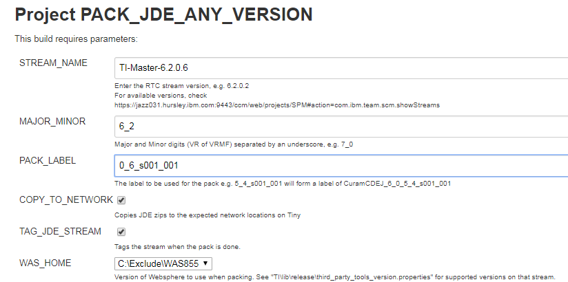

Work in Progress
Introduction
This page describes the Technical Infrastructure process for releasing a JDE version 6.0.4.x and above. Release processes for older versions, test fixes and so on, will be documented elsewhere (TODO: provide links, split into child pages etc.).
Roles
Release Owner
The release owner is responsible for:
- Preparing the Release
- Monitoring release progress
- Verifying the release is ready
- Packing the release
- Announcing the release
What is the process for assigning a release owner?
Release Stakeholders
- SDEJ, CDEJ, BizInf
- FVT
- Builder Management
- Release Management
Prep the Release
Establish\create the following;
- Verify the version number (needed for most of the following steps....creating the release wiki page, packing etc.)
- Create the Release wiki page
Monitor the Release
TODO: running regular status meetings with the release stakeholders (minus release management), meeting agenda, who attends, what do you "monitor", dashboards, do you know what stream is being used for the release, are there any merges from other streams. do you know the label\version number that will be used to release the JDE etc.
Verify the Release is Ready
TODO: How do we do this today? What does the "release owner" have to do? TechInf release status meetings, dashboards, checking with FVT etc. confirm stream\version number for the pack.
Pack the Release
The JDE is packed from the following Jenkins project:http://dslvm10.mul.ie.ibm.com:8080/view/Create%20Official%20Packs/job/PACK_JDE_ANY_VERSION/
- Click the "Build with Parameters" link on the left and you will be presented with the following:
- 
- Choose the appropriate stream name for the release which is established when the release was prepared earlier.
- Enter the major minor version e.g. 7_0, 6_1, 6_2 e.t.c
- Enter the pack label. The build will use a prefix based on the chosen stream when creating the various JDE deliverables. The example shown would create CuramCDEJ_6_2_0_6_s001_001.zip for example.
- Ensure both "COPY_TO_NETWORK" and "TAG_JDE_STREAM" are selected and then click build.
- Note: Scenarios where tagging, for example, are not required are not covered on this wiki page which covers "official" JDE packs. Exceptions cases will be documented elsewhere on this wiki (TODO: get example(s) once they are created.
- Once you click build, the progress will be shown in the "build history" on the left of the page. When it completes successfully a green circle will be displayed next to the build.
- TODO: troubleshooting Jenkins build failures is outside the scope of this document. Provide a link to a troubleshooting guide....if it exists.
- The build will produce a zip for each JDE deliverable in the following locations on "tiny" which must be copied manually to their corresponding locations on the "gigantic" server
- ADBuildTools:
- SDEJ + CDEJ:
- Globalization:
- etc.
Announce the Release
Release Management have documented How to Announce an Internal Release. This covers the format of the release announcement messages, what wiki pages to update and so on.